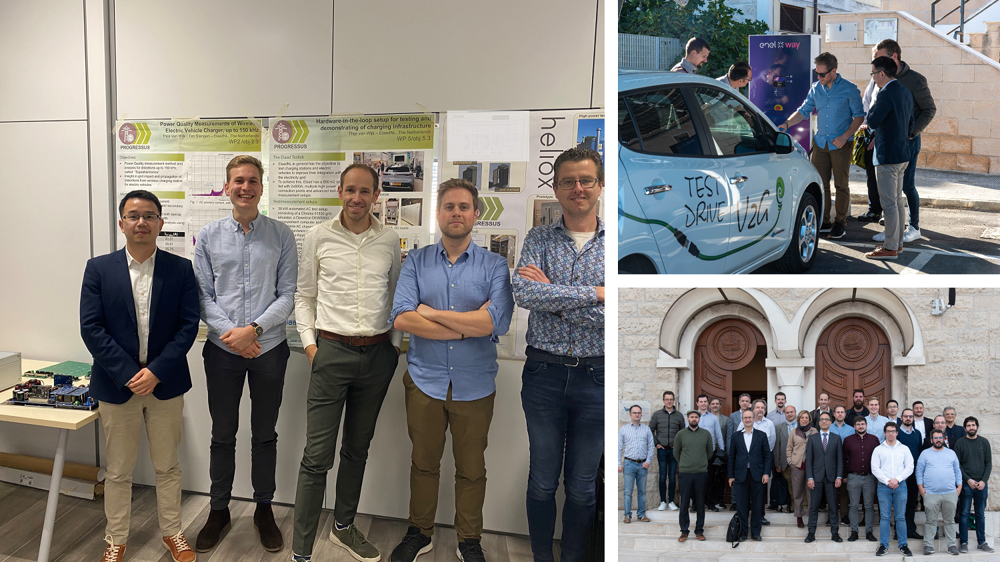
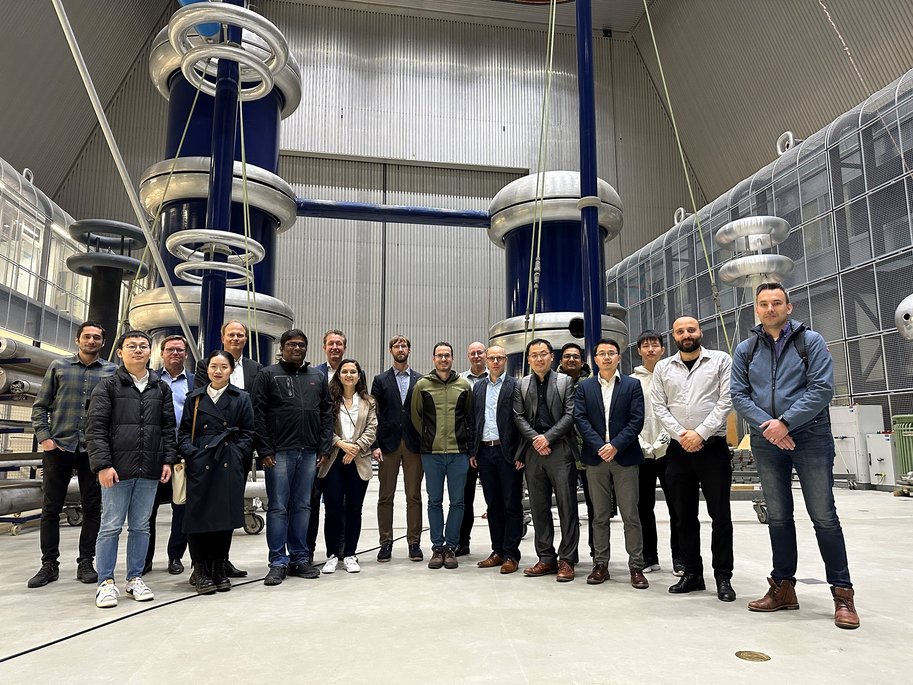
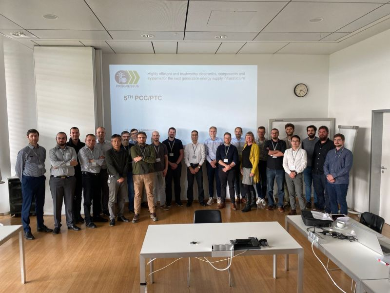
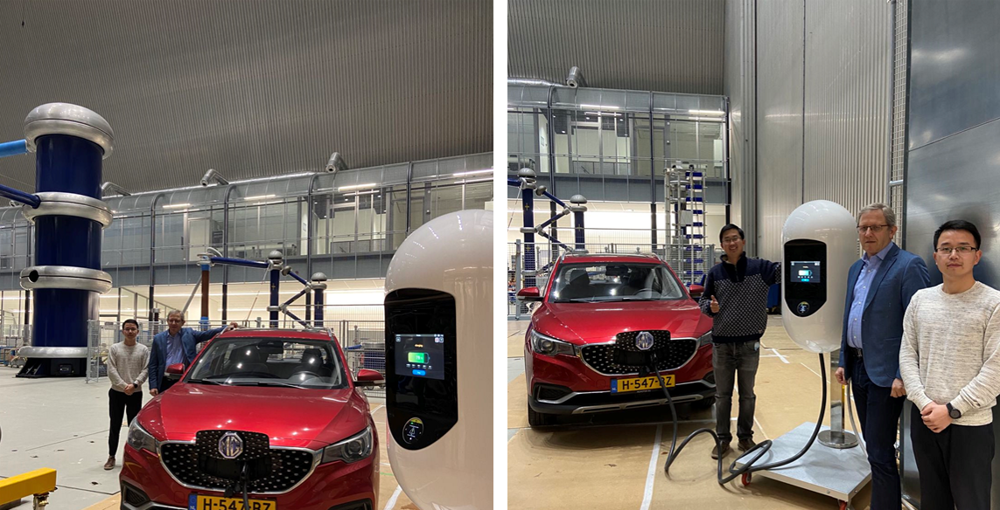
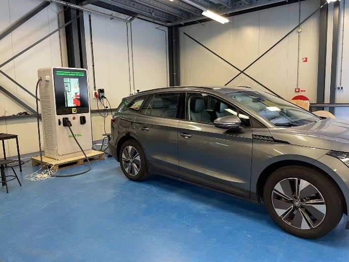

Prof. Kolar is handing over the award to our team, in APEC, Longbeach. We get the the Excellent Innovation Award, 2nd Place, in the IEEE International Challenge in Design Methods for Power Electronics. Cheers!

The Dutch delegation in the final review of Progressus in Bari, Italy Tutoiral in ECCE Asia 2023, Jeju, Korea

FlexH2 consoritum in ESP

Progressus meeting in Infineon, MunichKeynote in PEMC 2022, Brasov

MG EV test in ESPOffshore platform in a shipyard, Rotterdam

High power charger test in Autel